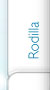

Lesiones de Hombro
Generalmente son causadas por traumatismos directos, (como caídas con el hombro extendido), por el uso constante relacionado con alguna actividad deportiva (beisbol, tenis, natación, pesas, etc. ), así como también, por enfermedades de tipo artritis deformante.
Por otra parte, en las personas mayores de 50 años, se relaciona directamente a un proceso de desgaste del cartílago o por inflamación de tendones (bíceps o manguito rotador).
Para este tipo de dolor, el tratamiento va encaminado a la terapia física, medicación de tipo protección articular y anti-inflamatoria, suplementos de liquido articular artificial o en definitiva, la cirugía artroscopica (microcirugía), en esta última se usa una cámara para ver el interior del hombro, realizando la reparación de forma ideal con una recuperación con poco dolor y permitiendo una reincorporación laboral y deportiva a la brevedad.
*Si a cursado con dolor de predominio nocturno que no le permite descansar bien y además se acompaña de dificultad para levantar el brazo por encima de su pecho o rascarse la espalda, es momento de acudir inmediatamente al especialista, ya que corre el riesgo de perder la función del hombro por no someterse a un tratamiento ideal, así que, no pierda más su tiempo con terapias y/o masajes que de nada le ayudaran.
Colocación del paciente anestesiado.
A través de este monitor se puede visualizar las estructuras del hombro.